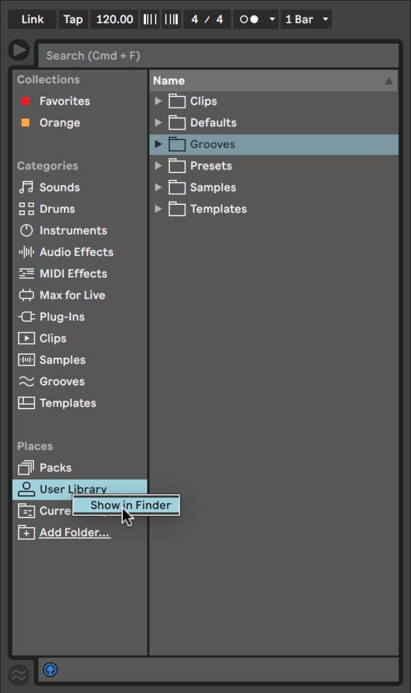

Installing a M4L Device
This step-by-step guide will cover the installation of Elecseq, a Max for Live (M4L) device. These steps should work regardless of what version of Live you have, as long as your version of Live supports M4L (versions 6.0 and up).
1. Download Elecseq.amxd from rancha-cr.github.io

2. In Ableton Live, right click the User Library and select Show in Finder (Mac) or Show in Explorer (Windows).
This will open the User Library in a new window. Create a new folder here.
3. Drag Elecseq.amxd from your Downloads folder into the new folder.
4. Elecseq will now appear in Ableton Live in your User Library under Devices.
That's it!
You can now load Elecseq into an Ableton Live project and save your presets to your User Library. Have fun with Elecseq and feel free to contact me with any issues.
@Ranch, 2023